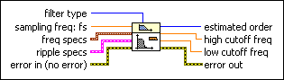
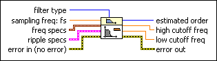
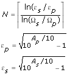
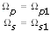
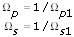
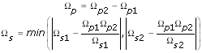
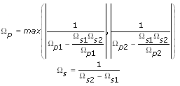
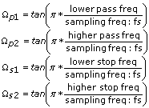

Butterworth Order Estimation VI
Owning Palette: Advanced IIR Filtering VIs
Requires: Full Development System
Estimates the Butterworth filter order.

 Add to the block diagram Add to the block diagram |
 Find on the palette Find on the palette |
Owning Palette: Advanced IIR Filtering VIs
Requires: Full Development System
Estimates the Butterworth filter order.

| Add to the block diagram |
Find on the palette |
 |
filter type specifies the type of filter that this VI creates.
|
||||||||
 |
sampling freq: fs is the sampling frequency in hertz. The value must be greater than zero. The default is 1.0 Hz, which is the normalized sampling frequency. | ||||||||
 |
freq specs specifies the band edge frequencies of the filter in hertz.
| ||||||||
 |
ripple specs specifies the ripple level in the passband and stopband of the filter.
| ||||||||
 |
error in describes error conditions that occur before this node runs. This input provides standard error in functionality. | ||||||||
 |
estimated order returns the minimum order value that the filter requires to meet the specifications you set. | ||||||||
 |
high cutoff freq returns the high cutoff frequency. The cutoff frequency corresponds to the half-power frequency or the 3 dB frequency. | ||||||||
|
low cutoff freq returns the low cutoff frequency. The cutoff frequency corresponds to the half-power frequency or the 3 dB frequency. | ||||||||
 |
error out contains error information. This output provides standard error out functionality. |
The Butterworth Order Estimation VI uses the formula below to estimate the order of a Butterworth filter:
where N is the estimated order
Ap the passband ripple in dB
As is the stopband ripple in dB
[ ] means Round Toward +Infinity
Ωp and Ωs are calculated as:
Lowpass filter:
Highpass filter:
Bandpass filter:
Bandstop filter:
where the various Ω values equal as follows:
